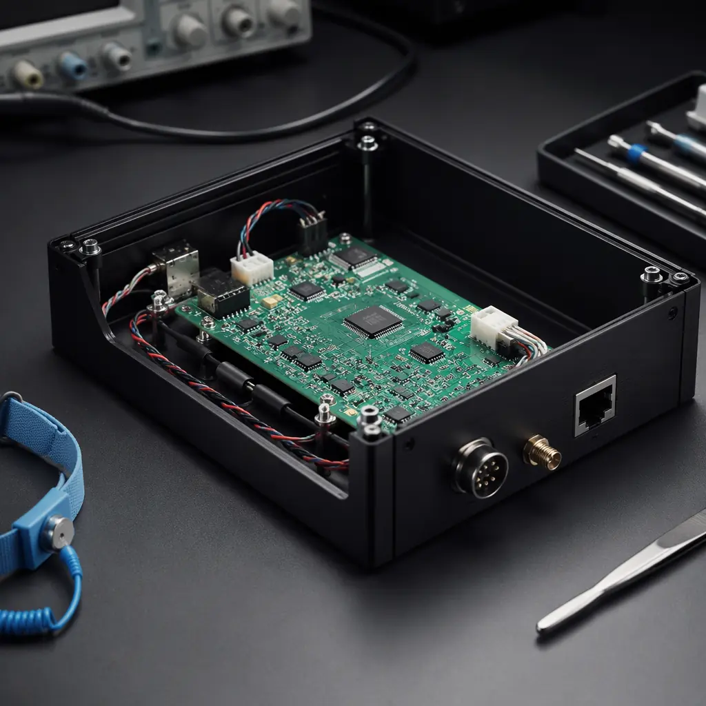
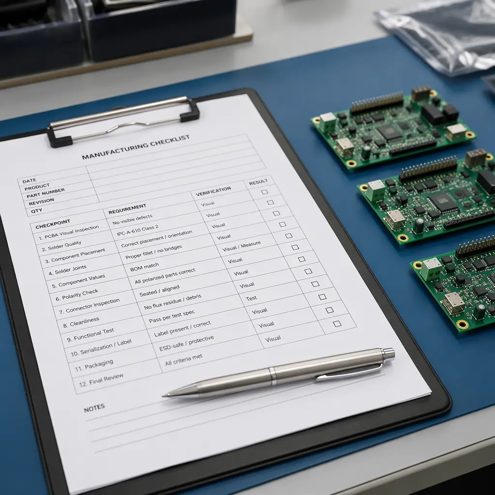

You're managing five suppliers for a single PCB order: a bare-board fabricator in one province, a component distributor in another, an SMT house across town, a testing lab you've never visited, and a packaging vendor who ships from a third location. When one link breaks — a component shortage, a quality issue, a customs delay — you're the one putting it back together.
Now imagine sending one set of Gerber files and a BOM to a single supplier. They handle everything — fabrication, component procurement, SMT, through-hole, conformal coating, functional testing, and final box-build — and deliver assembled, tested, packaged product to your dock. That's turnkey PCB assembly. Done right, it cuts your supplier count from 5+ to 1 and your procurement overhead by an estimated 60-70%.
At Huaxing PCBA, our 8 SMT lines handle turnkey assembly projects from prototype to 100,000+ units across automotive, medical, industrial, and consumer electronics. This guide explains what turnkey assembly actually includes, when it's the right choice, and how to evaluate a turnkey partner — so you make an informed decision, not a leap of faith.
What "Turnkey PCB Assembly" Actually Means — Scope by Scope
"Turnkey" is one of the most loosely used terms in electronics manufacturing. Depending on who you ask, it can mean anything from "we'll assemble boards from your consigned parts" to "we'll design, source, build, test, and box your product." Here's a precise breakdown of what each scope level includes — and which one you actually need.
| Scope Level | Includes | Best For |
|---|---|---|
| Partial Turnkey | Supplier sources components; you supply bare PCBs. Assembly + testing included. | You have a trusted PCB fab but want to offload procurement and assembly |
| Full Turnkey | Supplier handles bare PCB fab + component sourcing + SMT/THT assembly + testing. You provide Gerber + BOM. | Standard B2B procurement — one PO covers everything from raw laminate to tested assembly |
| Full Turnkey + Box-Build | Above + enclosure assembly, cable harnessing, labeling, functional testing, final packaging. You provide Gerber + BOM + mechanical specs. | You want to receive a finished product ready to ship to your end customer |
| Consignment (not turnkey) | You supply all components and bare PCBs. Supplier only assembles. You carry inventory risk. | You have negotiated component pricing and want to retain supply-chain control |
Key Takeaway: When you ask for "turnkey assembly," always specify the scope level. The price difference between partial turnkey and full turnkey + box-build can be 3-5× — and the wrong assumption leads to an invoice that doesn't match expectations. Ask: "Does your turnkey quote include bare PCB fabrication, or do I supply the boards?"
The 6-Stage Turnkey Assembly Process — From Gerber to Finished Product
Here's exactly what happens behind the scenes when you place a full turnkey order. Understanding this process helps you spot where corners get cut — and where quality is built in.
DFM Review & BOM Validation (Day 1-2)
Before a single component is ordered, the engineering team reviews your Gerber files and BOM for manufacturability issues: pad-to-trace clearance violations, component footprint mismatches, thermal relief problems, and solder mask slivers. They also cross-check every BOM line against active manufacturer part numbers — flagging obsolete, end-of-life, or long-lead-time components before procurement starts. A thorough DFM review at this stage prevents re-spins that cost 5-10× more downstream. See our DFM checklist for the 12 most common issues caught at this stage.
Component Procurement (Day 2-10)
The procurement team sources every BOM line through authorized distributors (Arrow, Avnet, Digi-Key, Mouser) and vetted China-market channels. For passives and connectors, they leverage the Shenzhen Huaqiangbei ecosystem — the world's largest electronics marketplace — to secure competitive pricing. Critical ICs are sourced only through franchised channels with full traceability. For components on allocation, the team provides real-time availability and suggests pin-compatible alternatives. A good turnkey partner should give you a procurement status tracker updated weekly — not a black box. Our PCB materials guide covers how laminate selection affects the full BOM cost.
Bare PCB Fabrication (runs in parallel with Stage 2)
While components are being sourced, the fab team produces your bare boards. Huaxing handles up to 32 layers with 3/3 mil trace/space, blind and buried vias, controlled impedance (±5%), and finishes from HASL to ENEPIG. Fabrication lead time for 4-6 layer boards is typically 5-8 working days. Turnkey advantage: the fab team and assembly team sit in the same building — so if a pad dimension needs adjustment for a specific component footprint, the conversation happens in person, not over a WeChat message chain between two factories 80 km apart. For understanding fab capabilities, see PCB stackup design and via technology options.
SMT Assembly & Through-Hole (Day 11-14)
Boards enter the SMT line: solder paste printing (laser-cut stencils, ±25μm alignment), high-speed pick-and-place (up to 45,000 CPH per line), 10-zone reflow soldering with nitrogen atmosphere for oxide-free joints, and automated optical inspection (AOI) on 100% of boards. Through-hole components go through selective soldering — faster and more consistent than hand soldering for mixed-technology boards. The entire SMT line runs with real-time statistical process control (SPC); any deviation triggers an immediate line stop and root-cause analysis. Our assembly process deep-dive covers each step in detail.
Testing & Quality Assurance (Day 14-16)
Testing is where turnkey assembly proves its value. A single-source partner runs multiple test stages without handoffs: AOI (100% of solder joints inspected optically), X-ray for BGA and QFN hidden joints, in-circuit testing (ICT) with custom bed-of-nails fixtures, and functional testing per your test specification — powered-up, real-world signal testing. For IPC Class 3 products, each board gets a full test report with serial number traceability. This multi-stage approach catches defects that a standalone assembly house running only AOI would miss. See our testing methods comparison for which tests your product needs.
Box-Build Assembly & Final Packaging (Day 16-20)
Tested PCBAs are assembled into enclosures: standoffs, connectors, cable harnesses, displays, and sealing gaskets. The box-build station includes torque-controlled screwdrivers with data logging, ESD-safe workbenches, and label printing per your specifications. Each finished unit undergoes a final power-on functional check before vacuum-sealed ESD packaging. For conformal coated boards, coating inspection is integrated into this stage. The finished product ships with full traceability documentation — from laminate lot number to final test pass timestamp.
Procurement Insight: The biggest source of delay in turnkey assembly is Stage 2 — component procurement. A supplier who doesn't flag allocation parts or obsolete components during DFM review is setting you up for a 6-8 week delay discovered at Week 4. Always ask: "What's your BOM validation process, and when will I know about component availability issues?"
Turnkey vs Consignment: When Each Model Wins
The turnkey-vs-consignment decision isn't ideological — it's arithmetic. Here's the cost comparison for a real 4-layer board with 120 components, 1,000-unit production run.
| Cost Factor | Turnkey (Supplier Sources) | Consignment (You Source) |
|---|---|---|
| Component cost (1,000 units) | $18.50/board (supplier's volume pricing) | $16.80/board (your negotiated pricing) |
| Component procurement labor | $0 (included) | ~$1,200 (your team's time: sourcing, ordering, tracking, incoming QC) |
| Inventory carrying cost | $0 (supplier carries) | ~$800 (3-month buffer stock, warehousing) |
| Assembly cost | $5.20/board | $5.20/board |
| Rework from component issues | $0 (supplier's responsibility) | Risk: 2-5% of units at $25/rework |
| True per-unit cost (1,000 units) | $23.70/board | $24.00-24.75/board |
The $1.70/board component-cost advantage of consignment disappears the moment you factor in procurement labor, inventory carrying cost, and rework risk. At volumes above 500 units, turnkey is almost always cheaper on a total-cost basis — even before accounting for the time your engineers spend managing suppliers instead of designing products.
When consignment makes sense: you have an existing component inventory you need to burn down, you're building an ultra-high-mix product with unique parts only you can source, or you're a Fortune 500 with dedicated supply-chain teams and negotiated pricing that beats Shenzhen market rates. For everyone else — turnkey wins on cost, speed, and headache reduction.

How to Evaluate a Turnkey PCB Assembly Partner — 7 Non-Negotiables
Not all "turnkey" providers are created equal. Here's what separates a manufacturing partner from a transaction vendor.
In-house PCB fabrication — not brokered
If your turnkey supplier doesn't own their PCB fab, they're brokering your boards to a third party — and marking up the price. Ask: "Do you fabricate PCBs in your own facility?" A yes means shorter lead times, direct quality accountability, and no middleman margin. Huaxing runs its own PCB fab and SMT lines under one roof in Shenzhen — 35,000 m² of manufacturing floor.
Component sourcing transparency
Your supplier should tell you exactly where every IC comes from — franchised distributor, independent broker, or Huaqiangbei spot market. For critical components (MCUs, power ICs, RF chips), demand franchised-only sourcing with full traceability. Accept independent brokers for passives and connectors. If the answer is "trust us, we have our sources" — get a second quote. Our supplier audit checklist includes a component sourcing questionnaire you can use today.
Certifications that match your industry
ISO 9001 is the baseline — not a differentiator. If you're in automotive, your supplier needs IATF 16949. Medical devices? ISO 13485. Aerospace? AS9100D. A supplier who claims to serve automotive with only ISO 9001 is cutting corners. Our certifications guide maps every industry to its required standard.
Testing capabilities beyond AOI
AOI catches about 85-90% of visible solder defects. It misses hidden BGA voids, counterfeit ICs, and intermittent connections. A serious turnkey partner offers X-ray inspection, ICT with custom fixtures, and functional testing per your spec — not just "we'll test it if you ask." Ask to see their test equipment list and recent first-pass yield data.
BOM management — not just one-time sourcing
Components go end-of-life. Prices change. Allocations happen. A turnkey partner should provide ongoing BOM health monitoring — flagging EOL notices, suggesting second-source alternatives, and maintaining a 3-6 month buffer stock of long-lead-time parts at no additional carrying cost. This is the difference between a partner and a one-time vendor.
Box-build capability — not "we can find someone"
If you need finished product, your supplier needs in-house box-build: enclosure assembly, cable harnessing, labeling, and final packaging. If they say "we partner with a box-build house," you're back to managing multiple suppliers — which defeats the purpose of turnkey. Confirm they have dedicated box-build stations with torque tooling and ESD protection on-site.
Clear pricing — no "and also" surprises
A turnkey quote should include a line-item breakdown: bare PCB cost, component cost (by category), assembly labor, testing, conformal coating (if applicable), box-build labor, and shipping terms. A single "all-in" number without the breakdown is useless for comparison. See how to decode a PCB quote for the full framework — the same principles apply to turnkey assembly quotes.
Red Flag: "We can handle everything — we have partners." The word "partners" in a turnkey context usually means "subcontractors we don't control." True turnkey means in-house: fabrication, procurement, assembly, testing, and box-build under one quality management system. If the supplier uses subcontractors for any of these stages, ask for the subcontractor's name, certifications, and audit history — and verify independently.
What Drives Turnkey Assembly Cost — Beyond the Obvious
Turnkey assembly pricing isn't just board complexity + component cost. These five factors can swing your per-unit cost by 30-50% — and most of them are under your control at the design stage.
BOM Line Count — The Single Biggest Lever
Every unique BOM line adds procurement labor, incoming inspection time, and feeder setup on the SMT line. A 50-line BOM costs roughly 30-40% less in assembly overhead than a 120-line BOM — even if total component cost is the same. Consolidate passive values where possible: instead of five different 0.1µF capacitor part numbers, use one and adjust elsewhere. Your procurement team will thank you.
Double-Sided Assembly
A double-sided board requires two passes through the SMT line — doubling placement time and requiring a second reflow cycle. For high-density designs, this is unavoidable, but it adds 40-60% to assembly cost. If your design can fit all components on one side through careful layout, you'll see significant savings at volume. Our stackup design guide covers component placement strategies.
Fine-Pitch & BGA Components
Components with pitch below 0.5mm or BGA packages with ball count above 400 require slower placement speeds, higher-precision nozzles, and mandatory X-ray inspection — adding $0.50-2.00/board. This isn't a reason to avoid fine-pitch components, but it's a cost to factor into your BOM decisions. For BGAs specifically, see our BGA assembly guide.
Conformal Coating & Potting
If your product needs environmental protection — for automotive under-hood, outdoor industrial, or marine applications — conformal coating adds $0.30-1.50/board depending on coating type (acrylic, silicone, urethane, parylene) and coverage area. Potting for full encapsulation is significantly more expensive ($3-15/unit). Our conformal coating guide covers the trade-offs between coating types.
Volume Tiers — Where the Real Savings Are
Turnkey assembly costs follow a step-function, not a linear curve: 100 units (setup-dominated, ~$35-50/board), 1,000 units (sweet spot, ~$18-30/board), 10,000 units (volume pricing on components kicks in, ~$12-22/board). The biggest percentage cost drop happens between 100 and 1,000 units. If you're prototyping at 50 units and planning to scale to 5,000, ask your supplier for a volume-tiered quote upfront — the setup cost amortization math changes everything. See prototype vs production for the full scaling roadmap.
The Turnkey Assembly Decision Checklist
Before you send that RFQ, run through these five questions. If you can answer "yes" to at least four, turnkey assembly is almost certainly the right model for your project.

Does your project have 50+ unique BOM lines?
The more components you need to source, the more procurement labor turnkey eliminates. Below 50 lines, consignment may still make sense if you already have inventory.
Is your order volume between 500 and 50,000 units/year?
This is the turnkey sweet spot. Below 500 units, NRE amortization hurts. Above 50,000, you may have the scale to justify in-house supply-chain management. Our PCB cost factors guide shows how volume affects every line item.
Are your engineers spending >10% of their time on supplier management?
If your hardware engineers are tracking component deliveries, chasing invoice discrepancies, and doing incoming QC — they're not designing your next product. Turnkey gives them their time back.
Do you need finished product, not just assembled PCBs?
If your product requires enclosure assembly, cable harnessing, labeling, and packaging — a turnkey partner with box-build capability eliminates an entire secondary supply chain. For quick-turn needs, see quick-turn manufacturing options.
Is quality accountability a single point of concern?
When a consignment-built product fails in the field, you get to play detective: was it the bare board? The component? The assembly process? The coating? With turnkey, there's one throat to choke — and that's a feature, not a bug. Our testing guide shows how to specify test coverage that prevents field failures.
At Huaxing PCBA, we run full turnkey + box-build under one roof — 35,000 m² in Shenzhen with 8 SMT lines, in-house PCB fabrication up to 32 layers, and dedicated box-build stations with ESD protection and torque-controlled tooling. Every turnkey project includes DFM review, BOM validation with EOL/availability flags, 100% AOI + X-ray on BGAs, and a line-item quote showing exactly where your money goes. Download our supplier audit checklist to evaluate any turnkey partner, or contact our engineering team to discuss your project — Gerber + BOM in, finished product out.